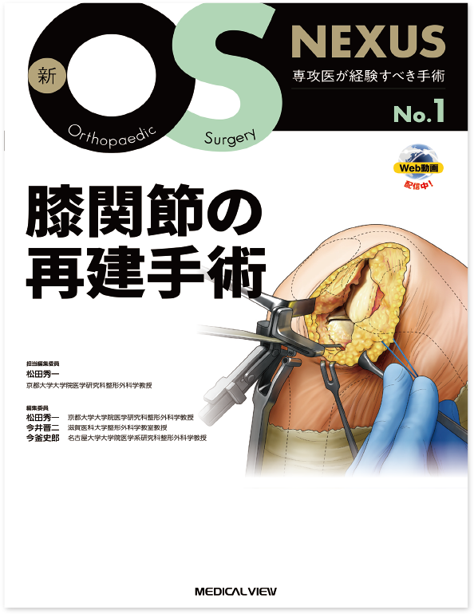

次世代を担う整形外科医へ
確かな技術をつなげる
「OS NEXUS」の新シリーズ！
- 「専攻医が経験すべき手術」を
シリーズを通して網羅 - 知っておくと有用な
「基本的手術手技」を巻末に掲載 - 手技の理解を深める
「Anatomy Key Point」を掲載 - ストリーミング動画により
静止画では伝わりづらい部分もよくわかる！
※マウスをフォーカスすると画像を拡大できます。


OS NEXUS タイトル一覧
-
No.1
膝関節の再建手術
担当編集委員 松田 秀一
212頁・イラスト250点，写真245点
ストリーミング動画 35本／96分
ISBN978-4-7583-2151-8 -
No.2
肩外傷の治療と
リバース型人工肩関節置換術担当編集委員 今井 晋二
204頁・イラスト170点，写真252点
ストリーミング動画 6本／23分
ISBN978-4-7583-2152-5 -
No.3
ベーシックな脊椎除圧術のすべて
担当編集委員 今釜 史郎
204頁・イラスト100点，写真60点
ストリーミング動画 19本／69分
ISBN978-4-7583-2153-2 -
No.410月刊行予定
下肢の骨折手術 ①骨盤・大腿骨
企画・編集 野田 知之
208頁・イラスト200点，写真100点
ストリーミング動画
ISBN978-4-7583-2154-9
※各巻のタイトルは変更される場合があります。
年間購読 申し込み受付中！2023年 年間購読料（No.5〜8）：定価48,400円（税込）

編集委員
松田 秀一
編集主幹／京都大学大学院医学研究科
整形外科学教授
今井 晋二
滋賀医科大学整形外科学教室教授
今釜 史郎
名古屋大学大学院医学系研究科
整形外科学教授
＋ゲストエディター
各巻定価12,100円 （本体11,000円＋税10%）
年4冊刊行（1・4・7・10月）
体裁：A4判・オールカラー／60〜200頁程度／ストリーミング動画付き